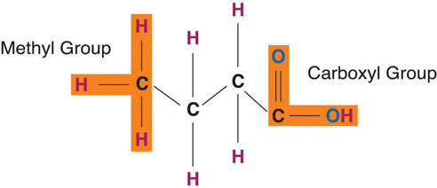

Lipids are unique organic compounds, each serving key roles and performing specific functions within the body. As we discuss the various types of lipids (triacylglycerols, phospholipids, and sterols) in further detail, we will compare their structures and functions and examine their impact on human health.
Triacylglycerols are the main form of lipid found in the body and in the diet. Fatty acids and glycerol are the building blocks of triacylglycerols. Glycerol is a thick, smooth, syrupy compound that is often used in the food industry. To form a triacylglycerol, a glycerol molecule is joined by three fatty acid chains. Triacylglycerols contain varying mixtures of fatty acids.
Fatty acids determine if the compound is solid or liquid at room temperature. Fatty acidsAn organic compound that contains a carboxylic acid (−COOH) group at one end and a methyl group at the other (−CH3). consist of a carboxylic acid (−OOH) group on one end of a carbon chain and a methyl group (−CH3) on the other end. Fatty acids can differ from one another in two important ways—carbon chain length and degree of saturation.
Fatty acids have different chain lengths and different compositions. Foods have fatty acids with chain lengths between four and twenty-four carbons and most of them contain an even number of carbon atoms. When the carbon chain length is shorter, the melting point of the fatty acid becomes lower—and the fatty acid becomes more liquid.
Figure 5.3 Structures of a Saturated, Monounsaturated, and Polyunsaturated Fat
Fatty acid chains are held together by carbon atoms that attach to each other and to hydrogen atoms. The term saturation refers to whether or not a fatty acid chain is filled (or “saturated”) to capacity with hydrogen atoms. If each available carbon bond holds a hydrogen atom we call this a saturated fatty acidA fatty acid that contains the maximum number of hydrogen atoms with no points of unsaturation. chain. All carbon atoms in such a fatty acid chain are bonded with single bonds. Sometimes the chain has a place where hydrogen atoms are missing. This is referred to as the point of unsaturationThe place on a molecule where additional hydrogen atoms can attach..
When one or more bonds between carbon atoms are a double bond (C=C), that fatty acid is called an unsaturated fatty acidA fatty acid that is missing hydrogen atoms with one or more point of unsaturation., as it has one or more points of unsaturation. Any fatty acid that has only one double bond is a monounsaturated fatty acidA fatty acid that contains one point of unsaturation., an example of which is olive oil (75 percent of its fat is monounsaturated). Monounsaturated fats help regulate blood cholesterol levels, thereby reducing the risk for heart disease and stroke. A polyunsaturated fatty acidA fatty acid that contains two or more points of unsaturation. is a fatty acid with two or more double bonds or two or more points of unsaturation. Soybean oil contains high amounts of polyunsaturated fatty acids. Both monounsaturated fats and polyunsaturated fats provide nutrition that is essential for normal cell development and healthy skin.
Foods that have a high percentage of saturated fatty acids tend to be solid at room temperature. Examples of these are fats found in chocolate (stearic acid, an eighteen-carbon saturated fatty acid is a primary component) and meat. Foods rich in unsaturated fatty acids, such as olive oil (oleic acid, an eighteen-carbon unsaturated fatty acid, is a major component) tend to be liquid at room temperature. Flaxseed oil is rich in alpha-linolenic acid, which is an unsaturated fatty acid and becomes a thin liquid at room temperature.
Knowing the connection between chain length, degree of saturation, and the state of the fatty acid (solid or liquid) is important for making food choices. If you decide to limit or redirect your intake of fat products, then choosing unsaturated fat is more beneficial than choosing a saturated fat. This choice is easy enough to make because unsaturated fats tend to be liquid at room temperature (for example, olive oil) whereas saturated fats tend to be solid at room temperature (for example, butter). Avocados are rich in unsaturated fats. Most vegetable and fish oils contain high quantities of polyunsaturated fats. Olive oil and canola oil are also rich in monounsaturated fats. Conversely, tropical oils are an exception to this rule in that they are liquid at room temperature yet high in saturated fat. Palm oil (often used in food processing) is highly saturated and has been proven to raise blood cholesterol. Shortening, margarine, and commercially prepared products (in general) report to use only vegetable-derived fats in their processing. But even so, much of the fat they use may be in the saturated and trans fat categories.
The introduction of a carbon double bond in a carbon chain, as in an unsaturated fatty acid, can result in different structures for the same fatty acid composition. When the hydrogen atoms are bonded to the same side of the carbon chain, it is called a cis fatty acidA fatty acid with the hydrogen atoms bonded to the same side of the carbon chain.. Because the hydrogen atoms are on the same side, the carbon chain has a bent structure. Naturally occurring fatty acids usually have a cis configuration.
In a trans fatty acidA fatty acid that has hydrogens attached on opposite sides of the carbon chain., the hydrogen atoms are attached on opposite sides of the carbon chain. Unlike cis fatty acids, most trans fatty acids are not found naturally in foods, but are a result of a process called hydrogenation. Hydrogenation is the process of adding hydrogen to the carbon double bonds, thus making the fatty acid saturated (or less unsaturated, in the case of partial hydrogenation). This is how vegetable oils are converted into semisolid fats for use in the manufacturing process.
According to the ongoing Harvard Nurses Health Study, trans fatty acids have been associated with increased risk for coronary heart disease because of the way they negatively impact blood cholesterol levels.Harvard School of Public Health. “It’s Time to End the Low-Fat Myth.” Introduction to “Fats and Cholesterol: Out with the Bad, In with the Good” in The Nutrition Source. http://www.hsph.harvard.edu/nutritionsource/what-should-you-eat/fats-full-story/#references.
Interestingly, some naturally occurring trans fats do not pose the same health risks as their artificially engineered counterparts. These trans fats are found in ruminant animals such as cows, sheep, and goats, resulting in trans fatty acids being present in our meat, milk, and other dairy product supply. Reports from the US Department of Agriculture (USDA) indicate that these trans fats comprise 15 to 20 percent of the total trans-fat intake in our diet. While we know that trans fats are not exactly harmless, it seems that any negative effect naturally occurring trans fats have are counteracted by the presence of other fatty acid molecules in these animal products, which work to promote human health.
Fatty acids are vital for the normal operation of all body systems. The circulatory system, respiratory system, integumentary system, immune system, brain, and other organs require fatty acids for proper function. The body is capable of synthesizing most of the fatty acids it needs from food. These fatty acids are known as nonessential fatty acidsA fatty acid that can be synthesized by the body.. However, there are some fatty acids that the body cannot synthesize and these are called essential fatty acidsA fatty acid that the body cannot synthesize and must be supplied through the diet.. It is important to note that nonessential fatty acids doesn’t mean unimportant; the classification is based solely on the ability of the body to synthesize the fatty acid.
Essential fatty acids must be obtained from food. They fall into two categories—omega-3 and omega-6. The 3 and 6 refer to the position of the first carbon double bond and the omega refers to the methyl end of the chain. Omega-3 and omega-6 fatty acids are precursors to important compounds called eicosanoidsCompounds derived from polyunsaturated fatty acids that control several body functions.. Eicosanoids are powerful hormones that control many other hormones and important body functions, such as the central nervous system and the immune system. Eicosanoids derived from omega-6 fatty acids are known to increase blood pressure, immune response, and inflammation. In contrast, eicosanoids derived from omega-3 fatty acids are known to have heart-healthy effects. Given the contrasting effects of the omega-3 and omega-6 fatty acids, a proper dietary balance between the two must be achieved to ensure optimal health benefits.
Essential fatty acids play an important role in the life and death of cardiac cells, immune system function, and blood pressure regulation. Docosahexaenoic acid (DHA)An omega-3 fatty acid that is especially important for brain growth and development in infants. is an omega-3 essential fatty acid shown to play important roles in synaptic transmission in the brain during fetal development.
Some excellent sources of omega-3 and omega-6 essential fatty acids are fish, flaxseed oil, hemp, walnuts, and leafy vegetables. Because these essential fatty acids are easily accessible, essential fatty acid deficiency is extremely rare.
There are many sources of omega-3 foods.
It is important to strike a proper balance between omega-3 and omega-6 fats in your diet. Research suggests that a diet that is too high in omega-6 fats distorts the balance of proinflammatory agents, promoting chronic inflammation and causing the potential for health problems such as asthma, arthritis, allergies, or diabetes. Omega-6 fats compete with omega-3 fats for enzymes and will actually replace omega-3 fats. The typical western diet is characterized by an excessive consumption of foods high in omega-6 fatty acids. To gain proper balance between the two, increase your omega-3 fat intake by eating more fatty fish or other sources of omega-3 fatty acids at least two times per week.
The fatty-acid profile of the diet directly correlates to the tissue lipid profile of the body. It may not solely be the quantity of dietary fat that matters. More directly, the type of dietary fat ingested has been shown to affect body weight, composition, and metabolism. The fatty acids consumed are often incorporated into the triacylglycerols within the body. Evidence confirms that saturated fatty acids are linked to higher rates of weight retention when compared to other types of fatty acids. Alternatively, the fatty acids found in fish oil are proven to reduce the rate of weight gain as compared to other fatty acids.Mori, T. “Dietary fish oil upregulates intestinal lipid metabolism and reduces body weight gain in C57BL/6J mice.” J Nutr. 2007 Dec;137(12):2629-34. http://www.ncbi.nlm.nih.gov/pubmed/18029475
Like triacylglycerols, phospholipids have a glycerol backbone. But unlike triacylglycerols, phospholipids are diglycerides (two fatty-acid molecules attached to the glycerol backbone) while their third fatty-acid chain has a phosphate group coupled with a nitrogen-containing group. This unique structure makes phospholipids water soluble. Phospholipids are what we call amphiphilicA compound that has both water-loving and fat-loving properties.—the fatty-acid sides are hydrophobic (dislike water) and the phosphate group is hydrophilic (likes water).
In the body phospholipids bind together to form cell membranes. The amphiphilic nature of phospholipids governs their function as components of cell membranes. The phospholipids form a double layer in cell membranes, thus effectively protecting the inside of the cell from the outside environment while at the same time allowing for transport of fat and water through the membrane.
Phospholipids are ideal emulsifiersCompound that allow two immiscible liquids to combine so that no separation occurs. that can keep oil and water mixed. Emulsions are mixtures of two liquids that do not mix. Without emulsifiers, the fat and water content would be somewhat separate within food. Lecithin (phosphatidylcholine), found in egg yolk, honey, and mustard, is a popular food emulsifier. Mayonnaise demonstrates lecithin’s ability to blend vinegar and oil to create the stable, spreadable condiment that so many enjoy. Food emulsifiers play an important role in making the appearance of food appetizing. Adding emulsifiers to sauces and creams not only enhances their appearance but also increases their freshness.
Lecithin’s crucial role within the body is clear, because it is present in every cell throughout the body; 28 percent of brain matter is composed of lecithin and 66 percent of the fat in the liver is lecithin. Many people attribute health-promoting properties to lecithin, such as its ability to lower blood cholesterol and aid with weight loss. There are several lecithin supplements on the market broadcasting these claims. However, as the body can make most phospholipids, it is not necessary to consume them in a pill. The body makes all of the lecithin that it needs.
Sterols have a very different structure from triacylglycerols and phospholipids. Most sterols do not contain any fatty acids but rather multiring structures. They are complex molecules that contain interlinking rings of carbon atoms, with side chains of carbon, hydrogen, and oxygen attached. Cholesterol is the best-known sterol because of its role in heart disease. It forms a large part of the plaque that narrows the arteries in atherosclerosis. In stark contrast, cholesterol does have specific beneficial functions to perform in the body. Like phospholipids, cholesterol is present in all body cells as it is an important substance in cell membrane structure. Approximately 25 percent of cholesterol in the body is localized in brain tissue. Cholesterol is used in the body to make a number of important things, including vitamin D, glucocorticoids, and the sex hormones, progesterone, testosterone, and estrogens. Notably, the sterols found in plants resemble cholesterol in structure. However, plant sterols inhibit cholesterol absorption in the human body, which can contribute to lower cholesterol levels.
Although cholesterol is preceded by its infamous reputation, it is clearly a vital substance in the body that poses a concern only when there is excess accumulation of it in the blood. Like lecithin, the body can synthesize cholesterol.